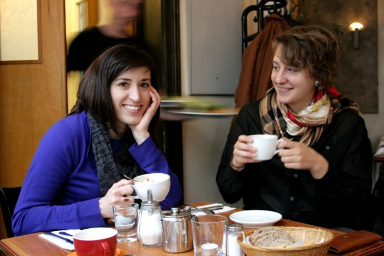

Welcome to Collidoscope Berlin!
The term Collidoscope was bornon a train ride, when we (Kelly and Sophia, hello!) were taking a trip together to a small town in Northwest Germany. We wanted a word to describe the imperfect yet spectacular collision of cultures that takes place within a city. A word to represent the many varied and distinct people, perspectives, and spaces contained within one metropolis. A word to protest the idea that Berlin (or any city for that matter) is made up of binaries: natives and expats, Germans and Turks, the haves and have nots. A word that shows we acknowledge our own perspective, but will always seek out others.
Berlin is a city of contrasts. Cute old ladies, punk rebels. Soviet soldier memorials, Soviet terror museums. German bratwurst, Turkish döner. Berlin is also a city that has a long history of attracting those who are “different”. The pacifist escaping military service during the Berlin Wall era, the guest worker from Greece hoping to provide a better life for his family, the young American artist trying to find affordable gallery space, the Romanian dub step DJ yearning for 24 hour nightlife. Many say that Berlin has become one of Europe’s, and perhaps the world’s, most diverse, intercultural, and creative cities. But what story does Berlin tell of itself?
This is our journey through Berlin; one story, person, and lens at a time. Stay tuned as we begin to share what we’ve been working on.
Read more about us here…

Photo credit: Anna Meister